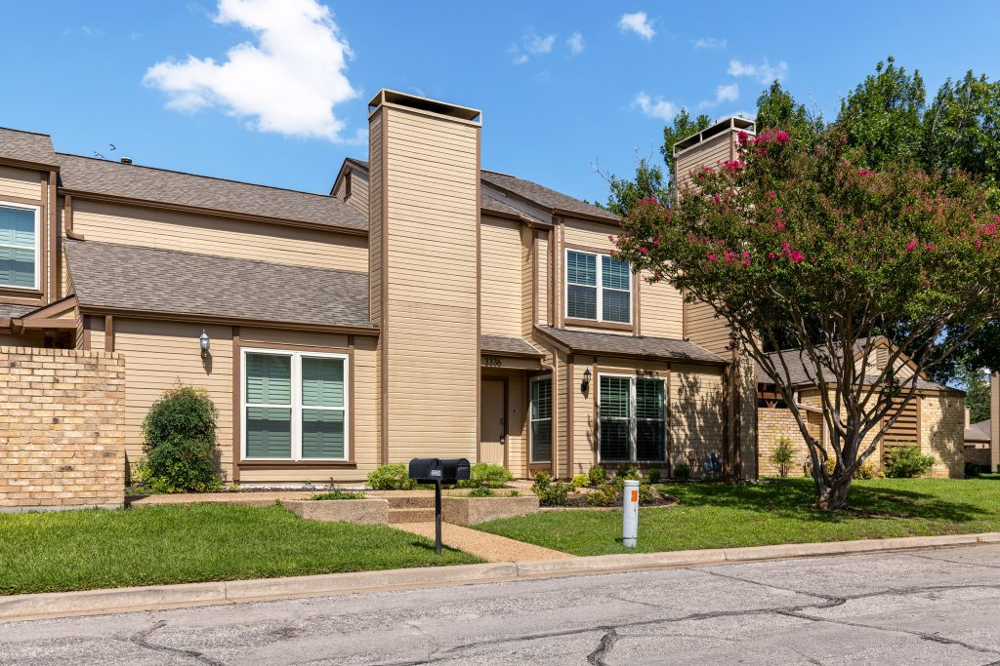
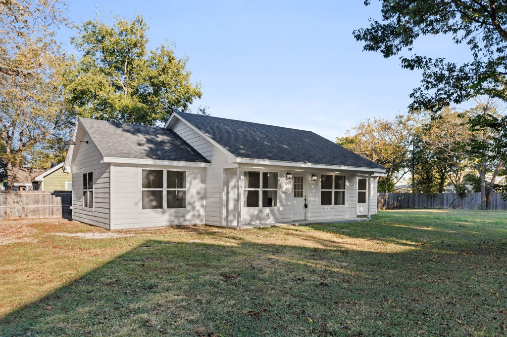

Meet Patrick Pendley
An owner’s perspective at the table.
Owner/Broker · Property Manager · TRLS · TRPM
After more than 20 years in real estate, I’ve learned that every rental starts with a different story. Before I recommend a plan, I want to understand why you own the property, what you need it to do, and what is keeping you up at night.
Patrick’s experience spans ownership, investing, sales, financing, rehabs and flips, lease options and purchases, and property management. He personally leads early owner conversations so the relationship begins with your situation and objectives—not simply the house.
Start a ConversationHow We’ll Manage
Your Waco, Texas Rental Property
How do you market Waco rental properties?
We prepare each home for market, create a clear listing with strong photos, publish it on our rental website, and syndicate it to major rental channels to reach qualified prospects.
How do you screen residents?
Every applicant receives consistent credit, rental-history, income, and nationwide eviction-history screening before an approval decision is made.
How do you collect rent?
Residents can pay through the online portal. Our team monitors payments, communicates clear expectations, and follows a consistent collection process.
Who handles maintenance and repairs?
Our in-house maintenance team coordinates requests and completes or oversees work, while owners receive clear communication about repairs and costs.
When do you inspect the property?
We document move-in and move-out condition and can perform mid-lease inspections to identify maintenance concerns and protect the property.
How do you enforce the lease?
We set expectations at move-in, document issues, communicate with residents, and apply the lease consistently, including coordinating legal support when necessary.
What Makes J R Grace Realty Different?
Property management is our core business. We combine the judgment of experienced owners and investors with disciplined operations, purposeful technology, and straight-shooting service.

We Understand Ownership
Mortgages continue during vacancy. Repairs affect cash flow. Insurance, reserves, and timing shape every decision. We start with your situation and objectives, then talk about the property.
Property Management First
Management is not a side service attached to a sales operation. Our attention stays on the systems, compliance, maintenance, resident experience, and communication that make rental ownership work.
An Elite-Level Standard
Our team trains, studies, documents, and improves. Technology makes the work faster and more trackable, while real people remain accountable for recommendations and results.
Free local rental analysis
Get Your FREE Property Management Rental Analysis
Tell us about your Central Texas property and receive a personalized rent recommendation from the J R Grace Realty team.
Management Built to Earn
Your Confidence

Real-World Judgment
More than 20 years across ownership, investing, rehabs, leasing, and management helps us explain the reasoning behind recommendations.

Technology With a Purpose
Digital agreements, reporting, applications, payments, and tracked workflows make the experience easier without replacing human service.

Responsible When It Matters
We do not promise a problem-free rental. We promise honest communication, practical recommendations, and responsibility when we make a mistake.
OWNER RESOURCE
Self-managing or hiring a Waco property manager?
Compare the direct fees with the hidden costs of vacancy, screening mistakes, maintenance coordination, and compliance.
See the cost breakdownFrequently Asked Questions About Property Management in Waco
How much does property management cost in Waco, TX?
Property management pricing depends on the property and services selected. J R Grace Realty provides a clear management proposal after reviewing the home; the optional Owner Benefit Package is $45 per month per unit.
What services does J R Grace Realty provide?
J R Grace Realty provides marketing and advertising, tenant screening, lease preparation and enforcement, rent collection, in-house maintenance, inspections, eviction coordination, and financial reporting for Waco-area rental owners.
How do you screen tenants?
Every applicant goes through a bundled screening package that includes credit evaluation, rental history verification, income verification, and a nationwide eviction history check.
How long does it take to rent out my property in Waco?
Leasing time depends on pricing, condition, season, and demand. J R Grace Realty markets homes on its website, syndicates listings to major rental sites, and uses professional presentation to reduce avoidable vacancy.
Do you handle evictions?
Yes. J R Grace Realty coordinates the eviction process when necessary and maintains an attorney relationship for legal support. Thorough screening and consistent rent collection are designed to make evictions rare.
Who handles maintenance and repairs?
J R Grace Realty has an in-house maintenance team and coordinates work as the general contractor. Residents submit requests through an online portal, and owners receive communication about work performed.
What areas do you serve?
J R Grace Realty manages rental properties throughout Central Texas, including Waco, Woodway, Hewitt, Robinson, China Spring, Bellmead, and Lacy Lakeview.
How do I get started?
Start with a free rental analysis to understand likely rent, opportunities to improve performance, and whether the property fits J R Grace Realty’s services. Call 254-777-5577 or complete the form on this page.